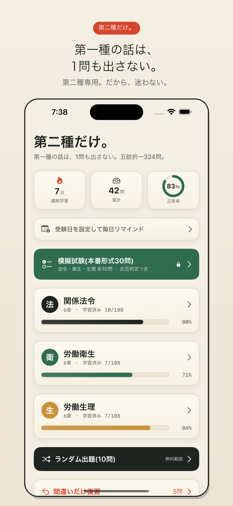
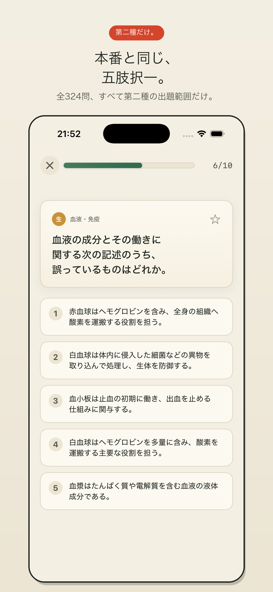
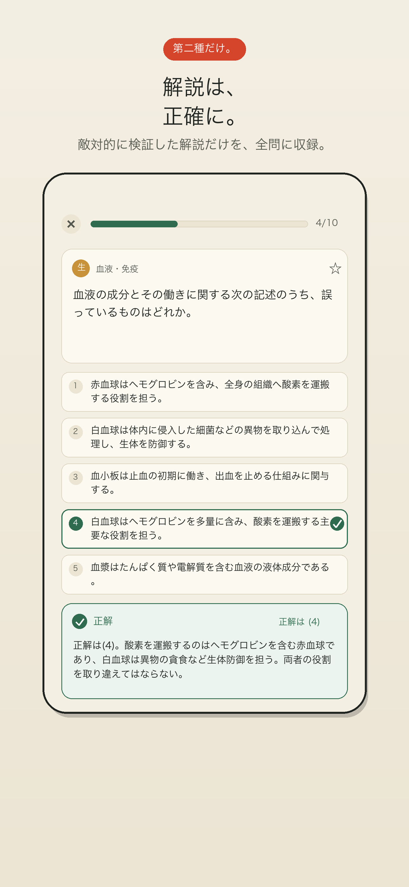
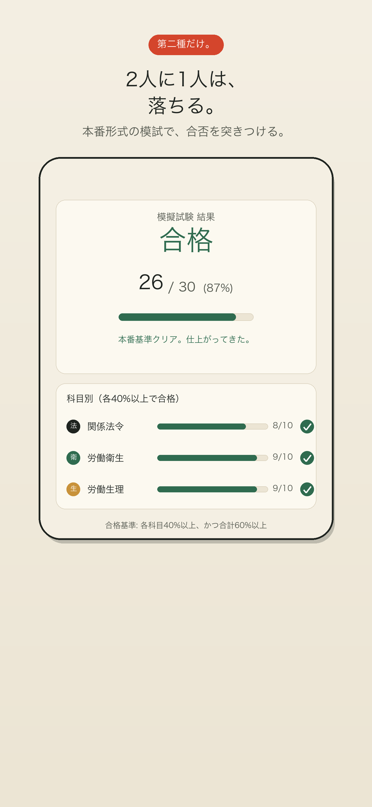

第二種衛生管理者だけに振り切った、本番形式（五肢択一）の問題集。全450問・全18章、全問に検証済みの解説。広告なし・買い切り。
スキマ時間に解いて、即採点、解説で理解。
関係法令・労働衛生・労働生理を全18章・450問収録。実際の試験と同じ形式で慣れる。
なぜ誤りかまで解説。数値・論点は専門知識でチェック済みの正確さ。
第一種の範囲は出題しません。混ざって迷うことなく、必要な範囲だけに集中。
章ごとに弱点をつぶせる。1回10問のスキマ時間学習で継続しやすい。
誤答を自動収集。間違えた問題だけまとめて復習し、弱点を確実につぶす。
中断しても進捗は自動保存。いつでも続きから。広告なしで集中できる。
よくある不満を、最初から解消。
和紙×墨の落ち着いたデザイン。




まず無料でお試し。気に入ったら一度きりの買い切り。